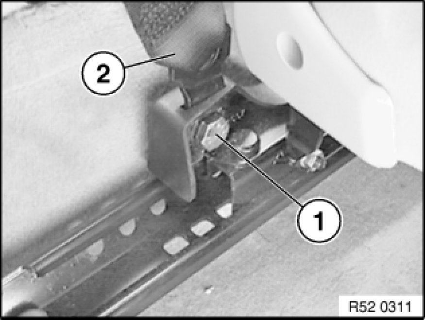
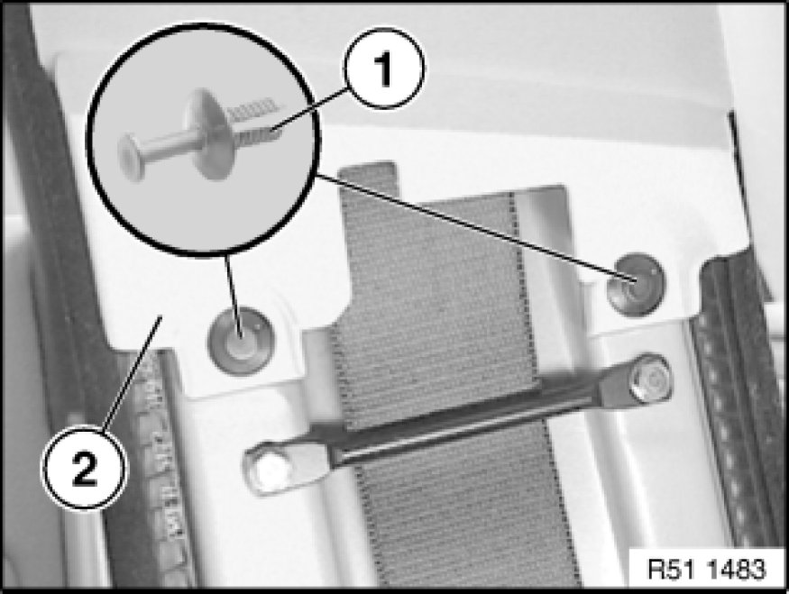
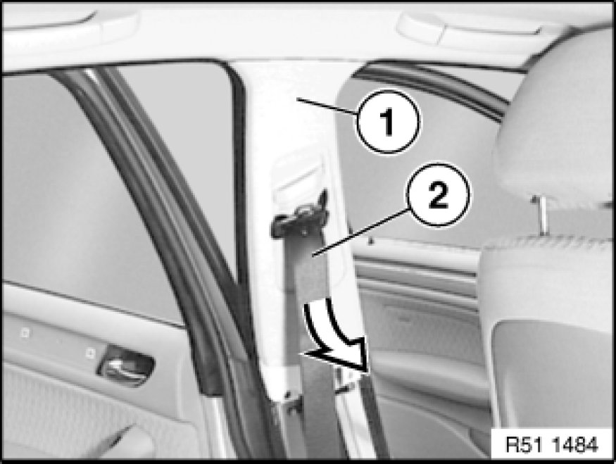
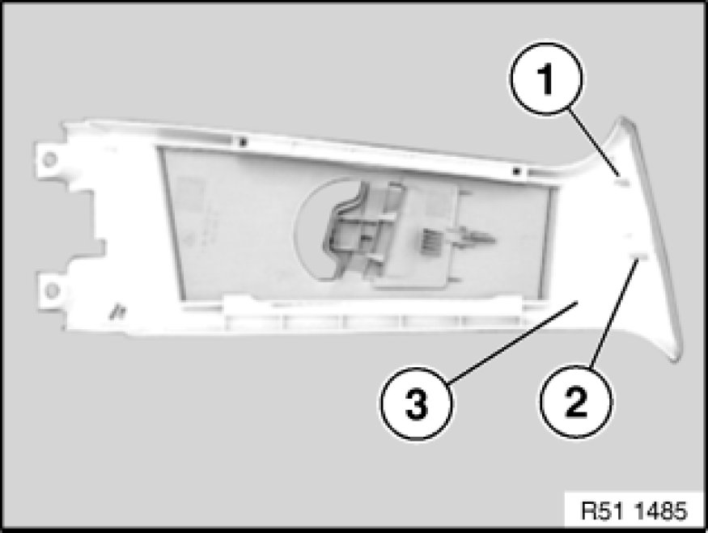

Removing and Installing/Replacing Trim on Left or Right Door Pillar (Top)
51 43 148 - Removing and installing or replacing trim on left or right door pillar (top)

Necessary preliminary tasks:
- Remove panel for door pillar (bottom) Removing and Installing/Replacing Trim for Left or Right Door Pillar (Bottom)

Release seatbelt screw (1) on front seat and feed out seatbelt strap (2).
Tightening torque 72 11 1AZ Specifications.

Release expansion rivets (1) on panel (2).

Pull off panel (1) towards bottom.
Feed out seatbelt strap (2).

Installation:
Locator (1) and guide (2) on trim (3) must not be damaged.